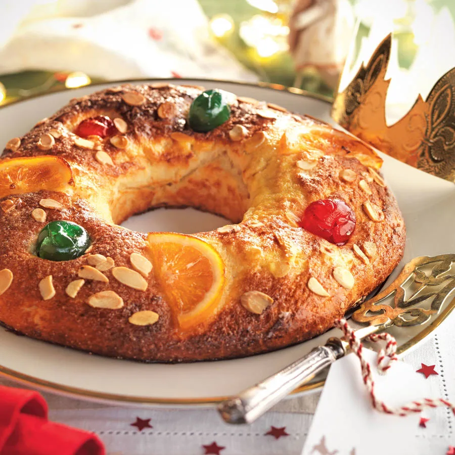

The roscón de Reyes: origins, tradition and how to choose one
The story of the holidays' last sweet, the meaning of the figurine and the bean, and how to spot a good roscón.
On 6 January, in millions of homes in Spain and Latin America, someone cuts a roscón and everyone discreetly hunts for the surprise. It is the last sweet of the holidays and one of the best loved. Its story mixes the Christian Epiphany, French customs and a good dose of legend.

A cake for Epiphany
The roscón de Reyes is tied to Epiphany, the feast that recalls the visit of the Magi to the Child Jesus. It is often said to originate in the Roman Saturnalia, when cakes containing a bean were shared out and whoever found it was "king" for a day. It is an appealing idea, but direct evidence is scarce, so it is best taken with caution. What is documented is that since the Middle Ages, cakes with a hidden bean were made for Epiphany in France and other European countries.
France, the galette and the crown
In northern France the galette des rois won out, a puff pastry filled with almond cream. In the south, by contrast, people preferred the couronne or gâteau des rois, a ring of brioche dough with candied fruit, very similar to the Spanish roscón. The custom is said to have reached the Spanish court with the Bourbons in the eighteenth century, although, again, this is more tradition than proven history.
The Spanish recipe
The Spanish roscón is a brioche dough enriched with butter, egg and sugar, perfumed with orange blossom water and orange and lemon zest. It is shaped into a ring, decorated with colourful candied fruit, flaked almonds and moistened sugar, and baked. Many bakeries sell it filled with whipped cream, chocolate truffle or custard, although purists prefer it plain, for dipping in hot chocolate.
Its shape is no accident: a large ring is easy to share among many people, and the coloured fruit recalls the jewels of a crown.
The surprise and the bean
Two things are hidden inside the roscón. The figurine, which in Spain is usually a king or a small porcelain object, brings luck to whoever finds it, and sometimes the right to wear the paper crown. The dried bean, on the other hand, means whoever finds it pays for next year's roscón. Sharing it out becomes a game.
The rosca de Reyes in the Americas
In Mexico the rosca de Reyes is a true institution. The hidden figure represents the Baby Jesus, recalling how the Holy Family hid him from Herod. Whoever finds it must treat everyone to tamales and atole on 2 February, Candlemas. The custom is repeated, with variations, in much of Central and South America.
How to choose a good roscón
The crumb. It should be light and slightly moist, with stringy strands when torn, and smell of orange blossom and orange.
The fruit. Real candied fruit, glossy and soft, is better than coloured jelly sweets.
The timing. A roscón is best on the day. If there is some left, it can be lightly toasted the next day and dipped in chocolate, like churros.
What to serve with it
The most traditional partner is hot chocolate. If you prefer wine, a Moscatel or a Pedro Ximénez goes very well with the sweet dough. And to review the whole recipe book of the season, don't miss the story of turrón and the Christmas table in ten countries.